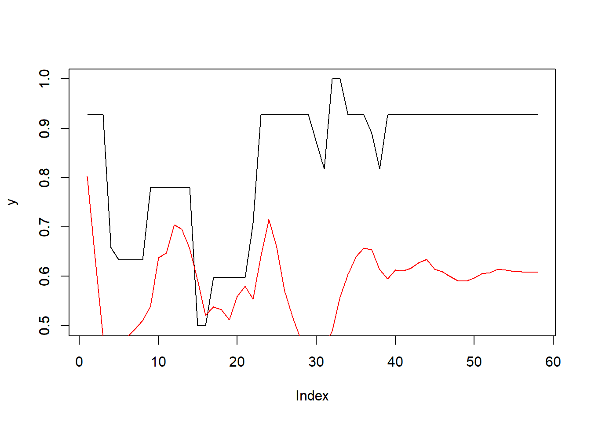
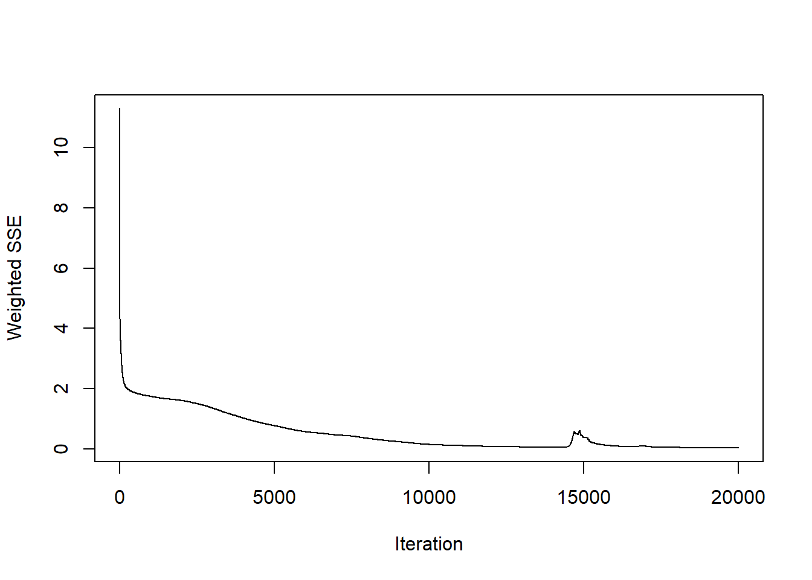
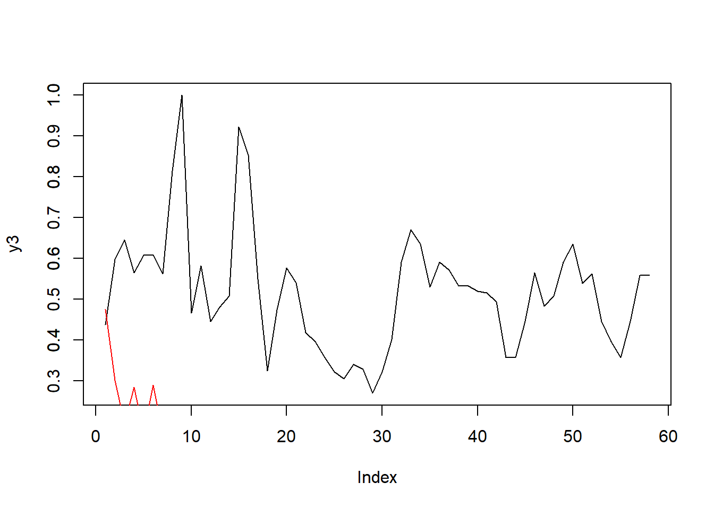
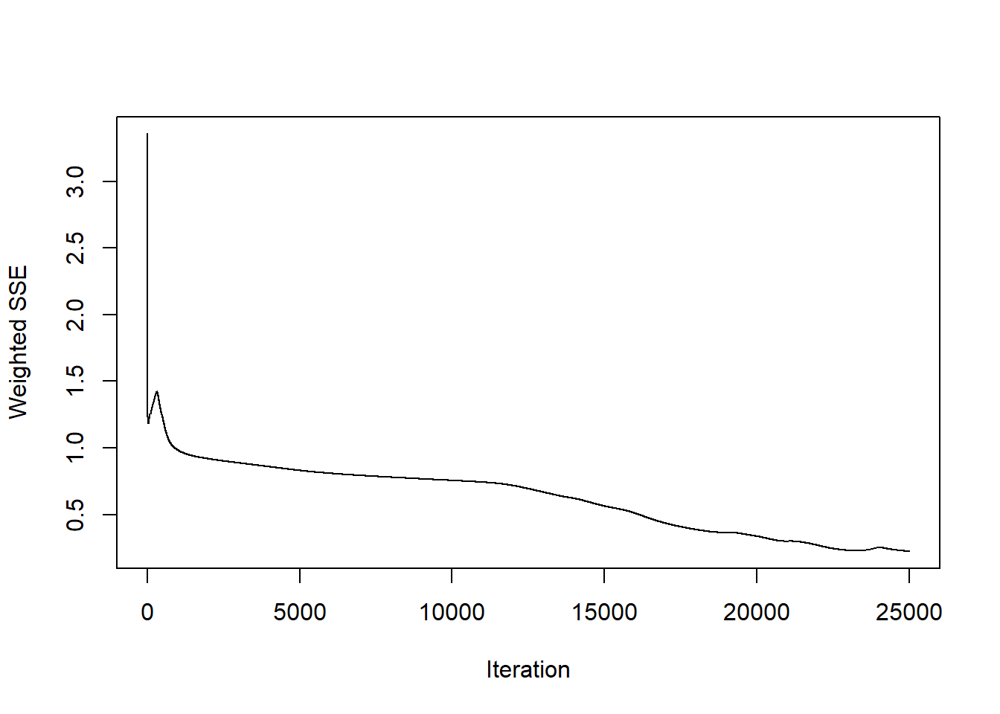
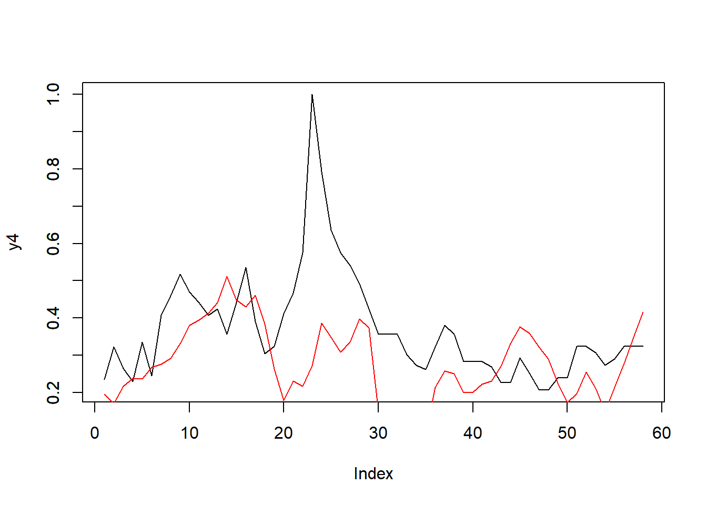
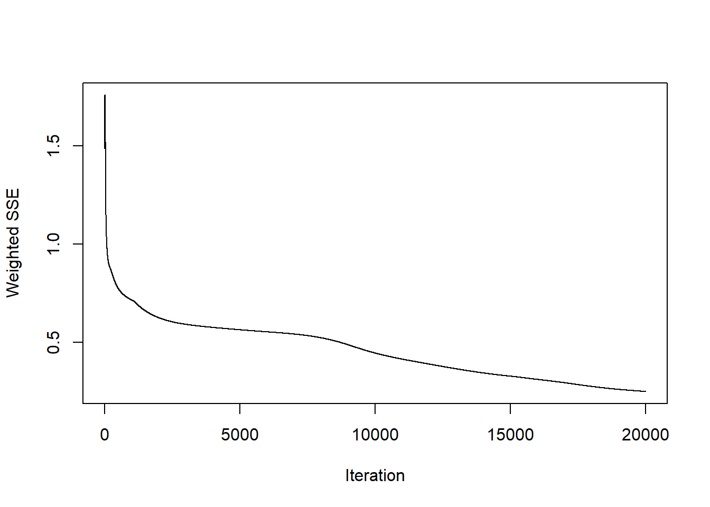
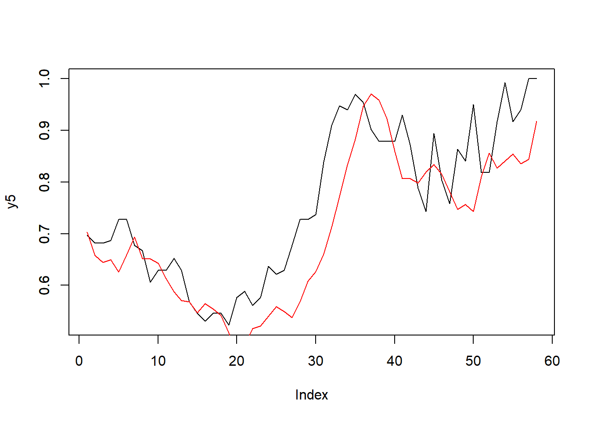

Capítulo 4 Modelación para el pronóstico de las series de tiempo
En esta sección se explorarán diferentes modelos para plantear el pronóstico de las series de tiempo de los alimentos escogidos, cada uno de los modelos implementados tendrá un subtitulo correspondiente y al final del capitulo se resumiran los resultados de los modelos implementados de manera consolidada con el fin de determinar cual resulta ser el modelo que presenta un mejor nivel de ajuste.
4.1 Definición de funciones base para la fase de modelación
Esta sección tiene la finalidad de definir funciones con la finalidad de simplificar la fase de modelación, en esta sección se calculan elementos como la estacionalidad, y se crean funciones que calculan métricas y gráficas de forma automática para cada modelo a aplicar.
4.1.1 Función para separación de la serie en conjunto de test y entrenamiento
import pandas as pd
from matplotlib import pyplot as plt
import plotly.graph_objects as go
import pmdarima
from pmdarima.arima import auto_arima
from statsmodels.tsa.holtwinters import SimpleExpSmoothing, Holt, ExponentialSmoothing
import prophet
from prophet import Prophet
def train_test_ts(serie,prop_test):
train= serie.iloc[:-int(len(serie)*prop_test)]
test= serie.iloc[-int(len(serie)*prop_test):]
return train, test
4.1.2 Funciones para aplicación de modelos de suavizamiento exponencial, generación de métricas y gráfica comparativa con plotly
def plot_fcast(series,
alimento,
prop_test,
fcast1:list[float],
fcast2:list[float],
fcast3:list[float],
title:str
):
serie_train,serie_test= train_test_ts(series[alimento],prop_test)
fig=go.Figure()
fig.add_trace(go.Scatter(x=serie_train.index,y=serie_train,name="Train"))
fig.add_trace(go.Scatter(x=serie_test.index,y=serie_test,name="Test"))
fig.add_trace(go.Scatter(x=serie_test.index,y=fcast1,name="Simple"))
fig.add_trace(go.Scatter(x=serie_test.index,y=fcast2,name="Holt's Linear"))
fig.add_trace(go.Scatter(x=serie_test.index,y=fcast3,name="Holt Winter's"))
fig.update_layout(template="simple_white", font=dict(size=12), title_text=title,
width=800, title_x=0.5, height=650, xaxis_title='Fecha',
yaxis_title='Precio (Pesos Colombianos)')
return fig.show()
def expon_smooth_mod(serie,alimento,prop_test):
serie_train,serie_test= train_test_ts(serie[alimento],prop_test)
simple_exp= SimpleExpSmoothing(serie_train).fit(optimized=True)
forecast_simple= simple_exp.forecast(len(serie_test))
MAE1= np.mean(np.abs(serie_test-forecast_simple))
MSE1= np.mean(np.square(serie_test-forecast_simple))
RMSE1= np.sqrt(np.mean(np.square(serie_test-forecast_simple)))
MAPE1= np.mean(np.abs((serie_test-forecast_simple)/serie_test)*100)
double_exp= Holt(serie_train,damped_trend=True).fit(optimized=True)
forecast_holt= double_exp.forecast(len(serie_test))
MAE2= np.mean(np.abs(serie_test-forecast_holt))
MSE2= np.mean(np.square(serie_test-forecast_holt))
RMSE2= np.sqrt(np.mean(np.square(serie_test-forecast_holt)))
MAPE2= np.mean(np.abs((serie_test-forecast_holt)/serie_test)*100)
hw_exp= ExponentialSmoothing(serie_train,trend="add",seasonal="add",seasonal_periods=52,damped_trend=True).fit(optimized=True)
forecast_hw= hw_exp.forecast(len(serie_test))
MAE3= np.mean(np.abs(serie_test-forecast_hw))
MSE3= np.mean(np.square(serie_test-forecast_hw))
RMSE3= np.sqrt(np.mean(np.square(serie_test-forecast_hw)))
MAPE3= np.mean(np.abs((serie_test-forecast_hw)/serie_test)*100)
results_dict= {"Modelo":["Suavizamiento simple","Suavizamiento de Holt","Holt-Winters"],
"MAE":[MAE1,MAE2,MAE3],
"MSE":[MSE1,MSE2,MSE3],
"RMSE":[RMSE1,RMSE2,RMSE3],
"MAPE":[MAPE1,MAPE2,MAPE3]}
results_df= pd.DataFrame.from_dict(results_dict,orient="columns")
return results_df,forecast_simple,forecast_holt,forecast_hw4.1.3 Funciones para aplicación de modelo ARIMA, generación de métricas y gráfica comparativa con plotly
def plot_fcas_arimat(series,
alimento,
prop_test,
fcast1:list[float],
conf_inttbl,
title:str):
serie_train,serie_test= train_test_ts(series[alimento],prop_test)
upper= conf_inttbl["Lower"]
lower= conf_inttbl["Upper"]
fig=go.Figure()
fig.add_trace(go.Scatter(x=serie_train.index,y=serie_train,name="Train"))
fig.add_trace(go.Scatter(x=serie_test.index,y=serie_test,name="Test"))
fig.add_trace(go.Scatter(x=serie_test.index,y=upper,name="Limite superior cofint 95%",mode="lines",marker=dict(color="#444"),showlegend=False))
fig.add_trace(go.Scatter(x=serie_test.index,y=lower,name="Limite inferior cofint 95%",mode="lines",fillcolor="rgba(68, 68, 68, 0.3)",fill='tonexty',marker=dict(color="#444"),showlegend=False))
fig.add_trace(go.Scatter(x=serie_test.index,y=fcast1,name="Gráfica pronóstico modelo "+title))
fig.update_layout(template="simple_white", font=dict(size=12), title_text=title,
width=800, title_x=0.5, height=650, xaxis_title='Fecha',
yaxis_title='Precio (Pesos Colombianos)')
return fig.show()
def perf_auto_arima(serie,alimento,prop_test,fits):
serie_train,serie_test= train_test_ts(serie[alimento].dropna(),prop_test)
#mod_aut_arima= auto_arima(serie_train,start_p=0,d=None,start_q=0,test="kpss",
#max_p=5, max_d=2, max_q=5, start_P=0,D=None,start_Q=0,
#max_P=5,max_D=5,max_Q=5,m=52,seasonal=True,trace=True,supress_warnings=True,stepwise=True
#,n_fits=fits,information_criterion="aic",maxiter=500)
mod_aut_arima= auto_arima(serie_train,test="kpss",seasonal_test='ocsb',seasonal=True,m=52,
error_action='ignore',supress_warnings=True,stepwise=True,trace=True,maxiter=50,n_fits=10,method="nm",n_jobs=1,information_criterion="bic").fit(serie_train)
arima_forecast,conf_int= mod_aut_arima.predict(n_periods=len(serie_test),return_conf_int=True,alpha=0.05)
resume= mod_aut_arima.summary()
opt_mod_name= resume.tables[0][1][1].data
conf_int_tbl= pd.DataFrame(conf_int,columns=["Lower","Upper"],index=serie_test.index)
MAE1= np.mean(np.abs(serie_test-arima_forecast))
MSE1= np.mean(np.square(serie_test-arima_forecast))
RMSE1= np.sqrt(np.mean(np.square(serie_test-arima_forecast)))
MAPE1= np.mean(np.abs((serie_test-arima_forecast)/serie_test)*100)
results_dict= {"Modelo":[opt_mod_name],
"MAE":[MAE1],
"MSE":[MSE1],
"RMSE":[RMSE1],
"MAPE":[MAPE1]}
results_df= pd.DataFrame.from_dict(results_dict,orient="columns")
diagnosis= mod_aut_arima.plot_diagnostics(figsize=(16, 8))
return results_df,resume,arima_forecast,conf_int_tbl,opt_mod_name,diagnosis
4.1.4 Funciones para aplicación de modelo Prophet
def perf_prophet(serie,alimento,prop_test):
prep_df= serie[[alimento]].reset_index().rename(columns={"Periodo":"ds",alimento:"y"})
serie_train,serie_test= train_test_ts(prep_df,prop_test)
print(serie_train)
mod_prophet= Prophet()
fit_prophet = mod_prophet.fit(serie_train)
future= fit_prophet.make_future_dataframe(periods=len(serie_test))
forecast_prophet= fit_prophet.predict(future)
forecast_plot= fit_prophet.plot(forecast_prophet)
MAE1= np.mean(np.abs(serie_test["y"]-forecast_prophet["yhat"]))
MSE1= np.mean(np.square(serie_test["y"]-forecast_prophet["yhat"]))
RMSE1= np.sqrt(np.mean(np.square(serie_test["y"]-forecast_prophet["yhat"])))
MAPE1= np.mean(np.abs((serie_test["y"]-forecast_prophet["yhat"])/forecast_prophet["yhat"])*100)
results_dict= {"Modelo":"Prophet",
"MAE":[MAE1],
"MSE":[MSE1],
"RMSE":[RMSE1],
"MAPE":[MAPE1]}
results_df= pd.DataFrame.from_dict(results_dict,orient="columns")
return fit_prophet,forecast_prophet,forecast_plot,results_df
4.2 Modelos de suavizamiento Exponencial (Simple,Doble y Triple)
4.2.1 Pronóstico serie de tiempo de la Ahuyama (Ciudad de Armenia)
fr_ahuy_axm= expon_smooth_mod(series_armenia,"Ahuyama_axm_merc",0.2)
plot_fcast(series_armenia,"Ahuyama_axm_merc",0.20,fr_ahuy_axm[1],fr_ahuy_axm[2],fr_ahuy_axm[3],"Pronóstico precio Ahuyama axm (métodos de suavizamiento)")Al comparar el desempeño de los modelos se tiene lo siguiente
## Modelo MAE MSE RMSE MAPE
## 0 Suavizamiento simple 327.740346 124505.317640 352.853111 27.193449
## 1 Suavizamiento de Holt 145.036919 28941.466278 170.121916 12.713245
## 2 Holt-Winters 147.629499 33234.040198 182.302058 12.5011074.2.2 Pronóstico serie de tiempo de la Cebolla Junca (Ciudad de Armenia)
fr_cebollj_axm= expon_smooth_mod(series_armenia,"Cebolla junca_axm_merc",0.2)
plot_fcast(series_armenia,"Cebolla junca_axm_merc",0.20,fr_cebollj_axm[1],fr_cebollj_axm[2],fr_cebollj_axm[3],"Pronóstico precio cebolla junca axm (métodos de suavizamiento)")## Modelo MAE MSE RMSE MAPE
## 0 Suavizamiento simple 138.515249 35259.629492 187.775476 7.062118
## 1 Suavizamiento de Holt 805.666284 822927.669209 907.153608 41.301963
## 2 Holt-Winters 358.452387 181683.135359 426.243047 18.6046514.2.3 Pronóstico serie de tiempo de la Habichuela (Ciudad de Armenia)
## C:\Users\DAVID\AppData\Roaming\Python\Python39\site-packages\statsmodels\tsa\holtwinters\model.py:917: ConvergenceWarning:
##
## Optimization failed to converge. Check mle_retvals.plot_fcast(series_armenia,"Habichuela_axm_merc",0.20,fr_habich_axm[1],fr_habich_axm[2],fr_habich_axm[3],"Pronóstico precio habichuela axm (métodos de suavizamiento)")## Modelo MAE MSE RMSE MAPE
## 0 Suavizamiento simple 628.802617 6.527327e+05 807.918757 22.828726
## 1 Suavizamiento de Holt 867.884736 1.037529e+06 1018.591696 33.933986
## 2 Holt-Winters 678.195263 7.784774e+05 882.313656 28.5716854.2.4 Pronóstico serie de tiempo del tomate chonto (Ciudad de Armenia)
fr_tomate_axm= expon_smooth_mod(series_armenia,"Tomate chonto_axm_merc",0.2)
plot_fcast(series_armenia,"Tomate chonto_axm_merc",0.20,fr_tomate_axm[1],fr_tomate_axm[2],fr_tomate_axm[3],"Pronóstico precio tomate chonto axm (métodos de suavizamiento)")## Modelo MAE MSE RMSE MAPE
## 0 Suavizamiento simple 519.243849 615597.627912 784.600298 19.369871
## 1 Suavizamiento de Holt 533.862147 636610.299388 797.878624 19.953212
## 2 Holt-Winters 361.463952 307941.482524 554.924754 13.6650904.2.5 Pronóstico serie de tiempo de la Ahuyama (Ciudad de Pereira)
fr_ahuy_per= expon_smooth_mod(series_pereira,"Ahuyama_per_merca",0.2)
plot_fcast(series_pereira,"Ahuyama_per_merca",0.20,fr_ahuy_per[1],fr_ahuy_per[2],fr_ahuy_per[3],"Pronóstico precio Ahuyama per (métodos de suavizamiento)")## Modelo MAE MSE RMSE MAPE
## 0 Suavizamiento simple 137.952267 24562.873357 156.725471 10.600972
## 1 Suavizamiento de Holt 245.036365 118496.950958 344.233861 16.610203
## 2 Holt-Winters 115.006853 17964.465921 134.031586 8.5017544.2.6 Pronóstico serie de tiempo de la Cebolla Junca (Ciudad de Pereira)
fr_ceboll_per= expon_smooth_mod(series_pereira,"Cebolla junca_per_merca",0.2)
plot_fcast(series_pereira,"Cebolla junca_per_merca",0.20,fr_ceboll_per[1],fr_ceboll_per[2],fr_ceboll_per[3],"Pronóstico precio cebolla per (métodos de suavizamiento)")## Modelo MAE MSE RMSE MAPE
## 0 Suavizamiento simple 430.513964 307550.740634 554.572575 24.904458
## 1 Suavizamiento de Holt 435.264770 257080.385044 507.030951 28.045675
## 2 Holt-Winters 394.820793 289176.734529 537.751555 21.0236384.2.7 Pronóstico serie de tiempo de la Habichuela (Ciudad de Pereira)
## C:\Users\DAVID\AppData\Roaming\Python\Python39\site-packages\statsmodels\tsa\holtwinters\model.py:917: ConvergenceWarning:
##
## Optimization failed to converge. Check mle_retvals.
##
## C:\Users\DAVID\AppData\Roaming\Python\Python39\site-packages\statsmodels\tsa\holtwinters\model.py:917: ConvergenceWarning:
##
## Optimization failed to converge. Check mle_retvals.plot_fcast(series_pereira,"Habichuela_per_merca",0.20,fr_habich_per[1],fr_habich_per[2],fr_habich_per[3],"Pronóstico precio habichuela per (métodos de suavizamiento)")## Modelo MAE MSE RMSE MAPE
## 0 Suavizamiento simple 1188.046127 1.815866e+06 1347.540898 34.836441
## 1 Suavizamiento de Holt 1193.722017 1.837356e+06 1355.491042 34.852479
## 2 Holt-Winters 1037.210218 1.381595e+06 1175.412556 32.0741824.2.8 Pronóstico serie de tiempo del tomate chonto (Ciudad de Pereira)
fr_tomat_per= expon_smooth_mod(series_pereira,"Tomate chonto_per_merca",0.2)
plot_fcast(series_pereira,"Tomate chonto_per_merca",0.20,fr_tomat_per[1],fr_tomat_per[2],fr_tomat_per[3],"Pronóstico precio tomate per (métodos de suavizamiento)")## Modelo MAE MSE RMSE MAPE
## 0 Suavizamiento simple 659.685588 878273.377545 937.162407 22.930786
## 1 Suavizamiento de Holt 684.356162 954078.732164 976.769539 23.407191
## 2 Holt-Winters 448.334651 422896.050403 650.304583 15.8581994.3 Modelo ARIMA
4.3.1 Pronóstico serie de tiempo de la Ahuyama (Ciudad de Armenia)
## Performing stepwise search to minimize bic
## ARIMA(2,1,2)(1,0,1)[52] intercept : BIC=3181.385, Time=5.28 sec
## ARIMA(0,1,0)(0,0,0)[52] intercept : BIC=3155.784, Time=0.12 sec
## ARIMA(1,1,0)(1,0,0)[52] intercept : BIC=3154.485, Time=2.75 sec
## ARIMA(0,1,1)(0,0,1)[52] intercept : BIC=3154.306, Time=2.70 sec
## ARIMA(0,1,0)(0,0,0)[52] : BIC=3150.376, Time=0.04 sec
## ARIMA(0,1,0)(1,0,0)[52] intercept : BIC=3161.459, Time=2.14 sec
## ARIMA(0,1,0)(0,0,1)[52] intercept : BIC=3161.459, Time=3.10 sec
## ARIMA(0,1,0)(1,0,1)[52] intercept : BIC=3167.130, Time=2.46 sec
## ARIMA(1,1,0)(0,0,0)[52] intercept : BIC=3148.868, Time=0.12 sec
## ARIMA(1,1,0)(0,0,1)[52] intercept : BIC=3154.478, Time=2.35 sec
## ARIMA(1,1,0)(1,0,1)[52] intercept : BIC=3160.132, Time=2.88 sec
## ARIMA(2,1,0)(0,0,0)[52] intercept : BIC=3154.138, Time=0.16 sec
## ARIMA(1,1,1)(0,0,0)[52] intercept : BIC=3154.246, Time=0.14 sec
## ARIMA(0,1,1)(0,0,0)[52] intercept : BIC=3148.580, Time=0.17 sec
## ARIMA(0,1,1)(1,0,0)[52] intercept : BIC=3154.226, Time=2.46 sec
## ARIMA(0,1,1)(1,0,1)[52] intercept : BIC=3159.931, Time=3.18 sec
## ARIMA(0,1,2)(0,0,0)[52] intercept : BIC=3154.390, Time=0.23 sec
## ARIMA(1,1,2)(0,0,0)[52] intercept : BIC=3171.561, Time=0.19 sec
## ARIMA(0,1,1)(0,0,0)[52] : BIC=3143.140, Time=0.09 sec
## ARIMA(0,1,1)(1,0,0)[52] : BIC=3148.796, Time=1.45 sec
## ARIMA(0,1,1)(0,0,1)[52] : BIC=3148.765, Time=2.14 sec
## ARIMA(0,1,1)(1,0,1)[52] : BIC=3154.422, Time=2.92 sec
## ARIMA(1,1,1)(0,0,0)[52] : BIC=3148.752, Time=0.13 sec
## ARIMA(0,1,2)(0,0,0)[52] : BIC=3148.734, Time=0.14 sec
## ARIMA(1,1,0)(0,0,0)[52] : BIC=3143.407, Time=0.08 sec
## ARIMA(1,1,2)(0,0,0)[52] : BIC=3156.733, Time=0.14 sec
##
## Best model: ARIMA(0,1,1)(0,0,0)[52]
## Total fit time: 37.875 seconds
plot_fcas_arimat(series_armenia,"Ahuyama_axm_merc",0.20,fr_arima_ahuy_axm[2],fr_arima_ahuy_axm[3],fr_arima_ahuy_axm[4])## Modelo MAE MSE RMSE MAPE
## 0 SARIMAX(0, 1, 1) 366.574664 151490.405698 389.217684 30.5842994.3.2 Pronóstico serie de tiempo de la cebolla junca (Ciudad de Armenia)
## Performing stepwise search to minimize bic
## ARIMA(2,1,2)(1,0,1)[52] intercept : BIC=3936.725, Time=3.71 sec
## ARIMA(0,1,0)(0,0,0)[52] intercept : BIC=3920.561, Time=0.09 sec
## ARIMA(1,1,0)(1,0,0)[52] intercept : BIC=3924.646, Time=2.63 sec
## ARIMA(0,1,1)(0,0,1)[52] intercept : BIC=3921.791, Time=2.59 sec
## ARIMA(0,1,0)(0,0,0)[52] : BIC=3914.897, Time=0.05 sec
## ARIMA(0,1,0)(1,0,0)[52] intercept : BIC=3926.127, Time=2.61 sec
## ARIMA(0,1,0)(0,0,1)[52] intercept : BIC=3926.144, Time=4.07 sec
## ARIMA(0,1,0)(1,0,1)[52] intercept : BIC=3931.498, Time=3.03 sec
## ARIMA(1,1,0)(0,0,0)[52] intercept : BIC=3918.930, Time=0.14 sec
## ARIMA(0,1,1)(0,0,0)[52] intercept : BIC=3916.128, Time=0.15 sec
## ARIMA(1,1,1)(0,0,0)[52] intercept : BIC=3920.242, Time=0.18 sec
##
## Best model: ARIMA(0,1,0)(0,0,0)[52]
## Total fit time: 19.295 seconds
plot_fcas_arimat(series_armenia,"Cebolla junca_axm_merc",0.20,fr_arima_ceboll_axm[2],fr_arima_ceboll_axm[3],fr_arima_ceboll_axm[4])## Modelo MAE MSE RMSE MAPE
## 0 SARIMAX(0, 1, 0) 138.342466 35342.098935 187.994944 7.048524.3.3 Pronóstico serie de tiempo de la habichuela (Ciudad de Armenia)
## Performing stepwise search to minimize bic
## ARIMA(2,1,2)(1,0,1)[52] intercept : BIC=4341.293, Time=3.56 sec
## ARIMA(0,1,0)(0,0,0)[52] intercept : BIC=4344.091, Time=0.11 sec
## ARIMA(1,1,0)(1,0,0)[52] intercept : BIC=4347.240, Time=2.96 sec
## ARIMA(0,1,1)(0,0,1)[52] intercept : BIC=4345.661, Time=3.57 sec
## ARIMA(0,1,0)(0,0,0)[52] : BIC=4338.471, Time=0.07 sec
## ARIMA(0,1,0)(1,0,0)[52] intercept : BIC=4345.934, Time=3.16 sec
## ARIMA(0,1,0)(0,0,1)[52] intercept : BIC=4346.786, Time=4.98 sec
## ARIMA(0,1,0)(1,0,1)[52] intercept : BIC=4350.620, Time=2.56 sec
## ARIMA(1,1,0)(0,0,0)[52] intercept : BIC=4345.692, Time=0.13 sec
## ARIMA(0,1,1)(0,0,0)[52] intercept : BIC=4343.513, Time=0.17 sec
## ARIMA(1,1,1)(0,0,0)[52] intercept : BIC=4347.563, Time=0.14 sec
##
## Best model: ARIMA(0,1,0)(0,0,0)[52]
## Total fit time: 21.434 seconds
plot_fcas_arimat(series_armenia,"Habichuela_axm_merc",0.20,fr_arima_habich_axm[2],fr_arima_habich_axm[3],fr_arima_habich_axm[4])## Modelo MAE MSE RMSE MAPE
## 0 SARIMAX(0, 1, 0) 628.684932 652573.753425 807.820372 22.8278754.3.4 Pronóstico serie de tiempo del tomate chonto (Ciudad de Armenia)
## Performing stepwise search to minimize bic
## ARIMA(2,1,2)(1,0,1)[52] intercept : BIC=4137.220, Time=3.16 sec
## ARIMA(0,1,0)(0,0,0)[52] intercept : BIC=4128.371, Time=0.09 sec
## ARIMA(1,1,0)(1,0,0)[52] intercept : BIC=4135.637, Time=2.73 sec
## ARIMA(0,1,1)(0,0,1)[52] intercept : BIC=4135.939, Time=2.74 sec
## ARIMA(0,1,0)(0,0,0)[52] : BIC=4122.708, Time=0.05 sec
## ARIMA(0,1,0)(1,0,0)[52] intercept : BIC=4129.981, Time=2.69 sec
## ARIMA(0,1,0)(0,0,1)[52] intercept : BIC=4130.159, Time=5.16 sec
## ARIMA(0,1,0)(1,0,1)[52] intercept : BIC=4135.711, Time=2.64 sec
## ARIMA(1,1,0)(0,0,0)[52] intercept : BIC=4134.044, Time=0.12 sec
## ARIMA(0,1,1)(0,0,0)[52] intercept : BIC=4134.050, Time=0.17 sec
## ARIMA(1,1,1)(0,0,0)[52] intercept : BIC=4119.837, Time=0.15 sec
## ARIMA(1,1,1)(1,0,0)[52] intercept : BIC=4127.423, Time=2.50 sec
## ARIMA(1,1,1)(0,0,1)[52] intercept : BIC=4127.837, Time=3.13 sec
## ARIMA(1,1,1)(1,0,1)[52] intercept : BIC=4133.285, Time=3.11 sec
## ARIMA(2,1,1)(0,0,0)[52] intercept : BIC=4125.808, Time=0.16 sec
## ARIMA(1,1,2)(0,0,0)[52] intercept : BIC=4127.161, Time=0.17 sec
## ARIMA(0,1,2)(0,0,0)[52] intercept : BIC=4126.023, Time=0.17 sec
## ARIMA(2,1,0)(0,0,0)[52] intercept : BIC=4127.445, Time=0.14 sec
## ARIMA(2,1,2)(0,0,0)[52] intercept : BIC=4131.001, Time=0.16 sec
## ARIMA(1,1,1)(0,0,0)[52] : BIC=4112.829, Time=0.12 sec
## ARIMA(1,1,1)(1,0,0)[52] : BIC=4114.034, Time=2.03 sec
## ARIMA(1,1,1)(0,0,1)[52] : BIC=4118.583, Time=2.60 sec
## ARIMA(1,1,1)(1,0,1)[52] : BIC=4129.758, Time=2.51 sec
## ARIMA(0,1,1)(0,0,0)[52] : BIC=4128.378, Time=0.12 sec
## ARIMA(1,1,0)(0,0,0)[52] : BIC=4128.381, Time=0.07 sec
## ARIMA(2,1,1)(0,0,0)[52] : BIC=4120.135, Time=0.12 sec
## ARIMA(1,1,2)(0,0,0)[52] : BIC=4121.496, Time=0.12 sec
## ARIMA(0,1,2)(0,0,0)[52] : BIC=4120.322, Time=0.13 sec
## ARIMA(2,1,0)(0,0,0)[52] : BIC=4121.791, Time=0.10 sec
## ARIMA(2,1,2)(0,0,0)[52] : BIC=4125.131, Time=0.14 sec
##
## Best model: ARIMA(1,1,1)(0,0,0)[52]
## Total fit time: 37.342 seconds
plot_fcas_arimat(series_armenia,"Tomate chonto_axm_merc",0.20,fr_arima_tomat_axm[2],fr_arima_tomat_axm[3],fr_arima_tomat_axm[4])## Modelo MAE MSE RMSE MAPE
## 0 SARIMAX(1, 1, 1) 533.592575 640353.739476 800.221057 19.876634.3.5 Pronóstico serie de tiempo de la Ahuyama (Ciudad de Pereira)
## Performing stepwise search to minimize bic
## ARIMA(2,1,2)(1,0,1)[52] intercept : BIC=3213.823, Time=3.35 sec
## ARIMA(0,1,0)(0,0,0)[52] intercept : BIC=3184.594, Time=0.08 sec
## ARIMA(1,1,0)(1,0,0)[52] intercept : BIC=3193.462, Time=2.90 sec
## ARIMA(0,1,1)(0,0,1)[52] intercept : BIC=3193.669, Time=2.82 sec
## ARIMA(0,1,0)(0,0,0)[52] : BIC=3178.925, Time=0.05 sec
## ARIMA(0,1,0)(1,0,0)[52] intercept : BIC=3189.899, Time=2.87 sec
## ARIMA(0,1,0)(0,0,1)[52] intercept : BIC=3189.922, Time=4.40 sec
## ARIMA(0,1,0)(1,0,1)[52] intercept : BIC=inf, Time=2.71 sec
## ARIMA(1,1,0)(0,0,0)[52] intercept : BIC=3188.367, Time=0.14 sec
## ARIMA(0,1,1)(0,0,0)[52] intercept : BIC=3188.526, Time=0.19 sec
## ARIMA(1,1,1)(0,0,0)[52] intercept : BIC=3191.839, Time=0.18 sec
##
## Best model: ARIMA(0,1,0)(0,0,0)[52]
## Total fit time: 19.712 seconds
plot_fcas_arimat(series_pereira,"Ahuyama_per_merca",0.20,fr_arima_ahuy_per[2],
fr_arima_ahuy_per[3],fr_arima_ahuy_per[4])## Modelo MAE MSE RMSE MAPE
## 0 SARIMAX(0, 1, 0) 137.780822 24502.109589 156.531497 10.5851334.3.6 Pronóstico serie de tiempo de la cebolla junca (Ciudad de Pereira)
## Performing stepwise search to minimize bic
## ARIMA(2,1,2)(1,0,1)[52] intercept : BIC=3940.473, Time=3.60 sec
## ARIMA(0,1,0)(0,0,0)[52] intercept : BIC=3907.129, Time=0.08 sec
## ARIMA(1,1,0)(1,0,0)[52] intercept : BIC=3917.770, Time=2.96 sec
## ARIMA(0,1,1)(0,0,1)[52] intercept : BIC=3917.843, Time=3.07 sec
## ARIMA(0,1,0)(0,0,0)[52] : BIC=3901.453, Time=0.07 sec
## ARIMA(0,1,0)(1,0,0)[52] intercept : BIC=3912.156, Time=3.03 sec
## ARIMA(0,1,0)(0,0,1)[52] intercept : BIC=3912.209, Time=4.88 sec
## ARIMA(0,1,0)(1,0,1)[52] intercept : BIC=3917.698, Time=2.70 sec
## ARIMA(1,1,0)(0,0,0)[52] intercept : BIC=3912.719, Time=0.13 sec
## ARIMA(0,1,1)(0,0,0)[52] intercept : BIC=3912.716, Time=0.16 sec
## ARIMA(1,1,1)(0,0,0)[52] intercept : BIC=3918.395, Time=0.14 sec
##
## Best model: ARIMA(0,1,0)(0,0,0)[52]
## Total fit time: 20.839 seconds
plot_fcas_arimat(series_pereira,"Cebolla junca_per_merca",0.20,fr_arima_ceboll_per[2],
fr_arima_ceboll_per[3],fr_arima_ceboll_per[4])## Modelo MAE MSE RMSE MAPE
## 0 SARIMAX(0, 1, 0) 430.657534 307417.025875 554.452005 24.9241944.3.7 Pronóstico serie de tiempo de la habichuela (Ciudad de Pereira)
## Performing stepwise search to minimize bic
## ARIMA(2,0,2)(1,0,1)[52] intercept : BIC=inf, Time=3.31 sec
## ARIMA(0,0,0)(0,0,0)[52] intercept : BIC=4673.794, Time=0.11 sec
## ARIMA(1,0,0)(1,0,0)[52] intercept : BIC=4500.579, Time=3.52 sec
## ARIMA(0,0,1)(0,0,1)[52] intercept : BIC=4538.842, Time=2.45 sec
## ARIMA(0,0,0)(0,0,0)[52] : BIC=5278.954, Time=0.05 sec
## ARIMA(1,0,0)(0,0,0)[52] intercept : BIC=4494.841, Time=0.12 sec
## ARIMA(1,0,0)(0,0,1)[52] intercept : BIC=4493.509, Time=2.39 sec
## ARIMA(1,0,0)(1,0,1)[52] intercept : BIC=4537.594, Time=2.51 sec
## ARIMA(1,0,0)(0,0,2)[52] intercept : BIC=4504.826, Time=26.80 sec
## ARIMA(1,0,0)(1,0,2)[52] intercept : BIC=4502.094, Time=27.68 sec
## ARIMA(0,0,0)(0,0,1)[52] intercept : BIC=4669.434, Time=2.62 sec
## ARIMA(2,0,0)(0,0,1)[52] intercept : BIC=4493.734, Time=2.79 sec
## ARIMA(1,0,1)(0,0,1)[52] intercept : BIC=4493.875, Time=2.74 sec
## ARIMA(2,0,1)(0,0,1)[52] intercept : BIC=4556.425, Time=2.86 sec
## ARIMA(1,0,0)(0,0,1)[52] : BIC=4533.578, Time=2.63 sec
##
## Best model: ARIMA(1,0,0)(0,0,1)[52] intercept
## Total fit time: 82.643 seconds
plot_fcas_arimat(series_pereira,"Habichuela_per_merca",0.20,fr_arima_habich_per[2],
fr_arima_habich_per[3],fr_arima_habich_per[4])## Modelo MAE ... RMSE MAPE
## 0 SARIMAX(1, 0, 0)x(0, 0, [1], 52) 1444.733498 ... 1619.520073 41.396453
##
## [1 rows x 5 columns]4.3.8 Pronóstico serie de tiempo del tomate chonto (Ciudad de Pereira)
## Performing stepwise search to minimize bic
## ARIMA(2,0,2)(1,0,1)[52] intercept : BIC=4552.089, Time=3.94 sec
## ARIMA(0,0,0)(0,0,0)[52] intercept : BIC=4536.538, Time=0.14 sec
## ARIMA(1,0,0)(1,0,0)[52] intercept : BIC=4346.592, Time=3.99 sec
## ARIMA(0,0,1)(0,0,1)[52] intercept : BIC=4404.555, Time=2.76 sec
## ARIMA(0,0,0)(0,0,0)[52] : BIC=5246.413, Time=0.05 sec
## ARIMA(1,0,0)(0,0,0)[52] intercept : BIC=4331.162, Time=0.14 sec
## ARIMA(1,0,0)(0,0,1)[52] intercept : BIC=4332.609, Time=2.52 sec
## ARIMA(1,0,0)(1,0,1)[52] intercept : BIC=4457.208, Time=2.85 sec
## ARIMA(2,0,0)(0,0,0)[52] intercept : BIC=4336.741, Time=0.17 sec
## ARIMA(1,0,1)(0,0,0)[52] intercept : BIC=4336.814, Time=0.16 sec
## ARIMA(0,0,1)(0,0,0)[52] intercept : BIC=4399.935, Time=0.15 sec
## ARIMA(2,0,1)(0,0,0)[52] intercept : BIC=4344.156, Time=0.14 sec
## ARIMA(1,0,0)(0,0,0)[52] : BIC=4369.652, Time=0.06 sec
##
## Best model: ARIMA(1,0,0)(0,0,0)[52] intercept
## Total fit time: 17.111 seconds
plot_fcas_arimat(series_pereira,"Tomate chonto_per_merca",0.20,fr_arima_tomat_per[2],
fr_arima_tomat_per[3],fr_arima_tomat_per[4])## Modelo MAE MSE RMSE MAPE
## 0 SARIMAX(1, 0, 0) 704.893147 1.006531e+06 1003.260107 23.9991534.4 Modelo Prophet (Facebook)
4.4.1 Pronóstico serie de tiempo de la Ahuyama (Ciudad de Armenia)

dic_output_prophet_ahuyama= {"Modelo":"Prophet",
"MAE":[538.732107],
"MSE":[315400.926538],
"RMSE":[561.605668],
"MAPE":[88.072058]}
results_ahuyama= pd.DataFrame.from_dict(dic_output_prophet_ahuyama,orient="columns")
results_ahuyama## Modelo MAE MSE RMSE MAPE
## 0 Prophet 538.732107 315400.926538 561.605668 88.0720584.4.2 Pronóstico serie de tiempo de la Cebolla Junca (Ciudad de Armenia)

dic_output_prophet_ceboll= {"Modelo":"Prophet",
"MAE":[286.750398],
"MSE":[121114.52877],
"RMSE":[348.015127],
"MAPE":[16.500639]}
results_ceboll= pd.DataFrame.from_dict(dic_output_prophet_ceboll,orient="columns")
results_ceboll## Modelo MAE MSE RMSE MAPE
## 0 Prophet 286.750398 121114.52877 348.015127 16.5006394.4.3 Pronóstico serie de tiempo de la Habichuela (Ciudad de Armenia)

dic_output_prophet_habich= {"Modelo":"Prophet",
"MAE":[286.750398],
"MSE":[121114.52877],
"RMSE":[348.015127],
"MAPE":[16.500639]}
results_habich= pd.DataFrame.from_dict(dic_output_prophet_habich,orient="columns")
results_habich## Modelo MAE MSE RMSE MAPE
## 0 Prophet 286.750398 121114.52877 348.015127 16.5006394.4.4 Pronóstico serie de tiempo del tomate chonto (Ciudad de Armenia)

dic_output_prophet_tomat= {"Modelo":"Prophet",
"MAE":[711.60695],
"MSE":[911478.292051],
"RMSE":[954.713723 ],
"MAPE":[45.735255]}
results_tomat= pd.DataFrame.from_dict(dic_output_prophet_tomat,orient="columns")
results_tomat## Modelo MAE MSE RMSE MAPE
## 0 Prophet 711.60695 911478.292051 954.713723 45.7352554.4.5 Pronóstico serie de tiempo de la Ahuyama (Ciudad de Pereira)

dic_output_prophet_ahuy_per= {"Modelo":"Prophet",
"MAE":[307.527883],
"MSE":[122881.670276],
"RMSE":[350.544819 ],
"MAPE":[29.782901]}
results_ahuy_per= pd.DataFrame.from_dict(dic_output_prophet_ahuy_per,orient="columns")
results_ahuy_per## Modelo MAE MSE RMSE MAPE
## 0 Prophet 307.527883 122881.670276 350.544819 29.7829014.4.6 Pronóstico serie de tiempo de la Cebolla Junca (Ciudad de Pereira)

dic_output_prophet_ceboll_per= {"Modelo":"Prophet",
"MAE":[307.527883],
"MSE":[122881.670276],
"RMSE":[350.544819 ],
"MAPE":[29.782901]}
results_ceboll_per= pd.DataFrame.from_dict(dic_output_prophet_ceboll_per,orient="columns")
results_ceboll_per## Modelo MAE MSE RMSE MAPE
## 0 Prophet 307.527883 122881.670276 350.544819 29.7829014.4.7 Pronóstico serie de tiempo de la Habichuela (Ciudad de Pereira)

dic_output_prophet_habich_per= {"Modelo":"Prophet",
"MAE":[1109.12691],
"MSE":[1.608060e+06],
"RMSE":[1268.092867],
"MAPE":[49.357022]}
results_habich_per= pd.DataFrame.from_dict(dic_output_prophet_habich_per,orient="columns")
results_habich_per## Modelo MAE MSE RMSE MAPE
## 0 Prophet 1109.12691 1608060.0 1268.092867 49.3570224.4.8 Pronóstico serie de tiempo del tomate chonto (Ciudad de Pereira)

dic_output_prophet_tomat_per= {"Modelo":"Prophet",
"MAE":[926.268479],
"MSE":[1.466837e+06],
"RMSE":[1211.130395],
"MAPE":[62.819451]}
results_tomat_per= pd.DataFrame.from_dict(dic_output_prophet_tomat_per,orient="columns")
results_tomat_per## Modelo MAE MSE RMSE MAPE
## 0 Prophet 926.268479 1466837.0 1211.130395 62.8194514.5 Modelos RNN - Elman y Jordan
4.5.1 Pronóstico serie de tiempo de la Ahuyama (Ciudad de Armenia)
## Loading required package: Rcpp##
## Attaching package: 'lubridate'## The following objects are masked from 'package:base':
##
## date, intersect, setdiff, union##
## Attaching package: 'zoo'## The following objects are masked from 'package:base':
##
## as.Date, as.Date.numeric## Loading required package: xts##
## ################################### WARNING ###################################
## # We noticed you have dplyr installed. The dplyr lag() function breaks how #
## # base R's lag() function is supposed to work, which breaks lag(my_xts). #
## # #
## # If you call library(dplyr) later in this session, then calls to lag(my_xts) #
## # that you enter or source() into this session won't work correctly. #
## # #
## # All package code is unaffected because it is protected by the R namespace #
## # mechanism. #
## # #
## # Set `options(xts.warn_dplyr_breaks_lag = FALSE)` to suppress this warning. #
## # #
## # You can use stats::lag() to make sure you're not using dplyr::lag(), or you #
## # can add conflictRules('dplyr', exclude = 'lag') to your .Rprofile to stop #
## # dplyr from breaking base R's lag() function. #
## ################################### WARNING ##################################### Loading required package: TTR## Registered S3 method overwritten by 'quantmod':
## method from
## as.zoo.data.frame zoolibrary(reticulate)
min_max_norm <- function(x) {
(x - min(x)) / (max(x) - min(x))
}
ts_ahuyama_axm <- py$series_armenia["Ahuyama_axm_merc"]
ts_ahuyama_axm <- as.data.frame(lapply(ts_ahuyama_axm,min_max_norm))
ts_ahuyama_xm <- as.ts(ts_ahuyama_axm)
train<- 1:293
y<- as.zoo(ts_ahuyama_xm)
x1<- Lag(y,k=1)
x2<- Lag(y,k=2)
x3<- Lag(y,k=3)
x4<- Lag(y,k=4)
x5<- Lag(y,k=5)
x6<- Lag(y,k=6)
x7<- Lag(y,k=7)
x8<- Lag(y,k=8)
x9<- Lag(y,k=9)
x10<- Lag(y,k=10)
x11<- Lag(y,k=11)
x12<- Lag(y,k=12)
x13<- Lag(y,k=13)
x14<- Lag(y,k=14)
x15<- Lag(y,k=15)
log_ahuyama_xm <- cbind(y,x1,x2,x3,x4,x5,x6,x7,x8,x9,x10,x11,x12,x13,x14,x15)
log_ahuyama_xm <- log_ahuyama_xm[-(1:15),]
inputs<- log_ahuyama_xm[,2:16]
outputs<- log_ahuyama_xm[,1]
fit_elman_ahuy<- elman(inputs[train],
outputs[train],
size=c(25,10),
learnFuncParams=c(0.1),
maxit=20000)
plotIterativeError(fit_elman_ahuy)y <- as.vector(outputs[-train])
plot(y,type="l")
axis(side=2, at=seq(0, 1, by=0.1))
pred <- predict(fit_elman_ahuy,inputs[-train])
lines(pred,col="red")
4.5.2 Pronóstico serie de tiempo de la cebolla junca (Ciudad de Armenia)
ts_ceboll_axm <- py$series_armenia["Cebolla junca_axm_merc"]
ts_ceboll_axm <- as.data.frame(lapply(ts_ceboll_axm,min_max_norm))
ts_ceboll_xm <- as.ts(ts_ceboll_axm)
train<- 1:293
y2<- as.zoo(ts_ceboll_xm)
x1<- Lag(y2,k=1)
x2<- Lag(y2,k=2)
x3<- Lag(y2,k=3)
x4<- Lag(y2,k=4)
x5<- Lag(y2,k=5)
x6<- Lag(y2,k=6)
x7<- Lag(y2,k=7)
x8<- Lag(y2,k=8)
x9<- Lag(y2,k=9)
x10<- Lag(y2,k=10)
x11<- Lag(y2,k=11)
x12<- Lag(y2,k=12)
x13<- Lag(y2,k=13)
x14<- Lag(y2,k=14)
x15<- Lag(y2,k=15)
log_ceboll_xm <- cbind(y2,x1,x2,x3,x4,x5,x6,x7,x8,x9,x10,x11,x12,x13,x14,x15)
log_ceboll_xm <- log_ceboll_xm[-(1:15),]
inputs<- log_ceboll_xm[,2:16]
outputs<- log_ceboll_xm[,1]
fit_elman_ceboll<- elman(inputs[train],
outputs[train],
size=c(25,10),
learnFuncParams=c(0.1),
maxit=20000)
plotIterativeError(fit_elman_ceboll)y2 <- as.vector(outputs[-train])
plot(y2,type="l")
axis(side=2, at=seq(0, 1, by=0.1))
pred <- predict(fit_elman_ceboll,inputs[-train])
lines(pred,col="red")
4.5.3 Pronóstico serie de tiempo de la habichuela (Ciudad de Armenia)
ts_habich_axm <- py$series_armenia["Habichuela_axm_merc"]
ts_habich_axm <- as.data.frame(lapply(ts_habich_axm,min_max_norm))
ts_habich_xm <- as.ts(ts_habich_axm)
train<- 1:293
y3<- as.zoo(ts_habich_xm)
x1<- Lag(y3,k=1)
x2<- Lag(y3,k=2)
x3<- Lag(y3,k=3)
x4<- Lag(y3,k=4)
x5<- Lag(y3,k=5)
x6<- Lag(y3,k=6)
x7<- Lag(y3,k=7)
x8<- Lag(y3,k=8)
x9<- Lag(y3,k=9)
x10<- Lag(y3,k=10)
x11<- Lag(y3,k=11)
x12<- Lag(y3,k=12)
x13<- Lag(y3,k=13)
x14<- Lag(y3,k=14)
x15<- Lag(y3,k=15)
log_habich_xm <- cbind(y3,x1,x2,x3,x4,x5,x6,x7,x8,x9,x10,x11,x12,x13,x14,x15)
log_habich_xm <- log_habich_xm[-(1:15),]
inputs<- log_habich_xm[,2:16]
outputs<- log_habich_xm[,1]
fit_elman_habich<- elman(inputs[train],
outputs[train],
size=c(25,10),
learnFuncParams=c(0.1),
maxit=20000)
plotIterativeError(fit_elman_habich)4.5.4 Pronóstico serie de tiempo del tomate chonto (Armenia)
ts_tomat_axm <- py$series_armenia["Tomate chonto_axm_merc"]
ts_tomat_axm <- as.data.frame(lapply(ts_tomat_axm,min_max_norm))
ts_tomat_xm <- as.ts(ts_tomat_axm)
train<- 1:293
y4<- as.zoo(ts_tomat_xm)
x1<- Lag(y4,k=1)
x2<- Lag(y4,k=2)
x3<- Lag(y4,k=3)
x4<- Lag(y4,k=4)
x5<- Lag(y4,k=5)
x6<- Lag(y4,k=6)
x7<- Lag(y4,k=7)
x8<- Lag(y4,k=8)
x9<- Lag(y4,k=9)
x10<- Lag(y4,k=10)
x11<- Lag(y4,k=11)
x12<- Lag(y4,k=12)
x13<- Lag(y4,k=13)
x14<- Lag(y4,k=14)
x15<- Lag(y4,k=15)
log_tomat_xm <- cbind(y4,x1,x2,x3,x4,x5,x6,x7,x8,x9,x10,x11,x12,x13,x14,x15)
log_tomat_xm <- log_tomat_xm[-(1:15),]
inputs<- log_tomat_xm[,2:16]
outputs<- log_tomat_xm[,1]
fit_elman_tomat<- elman(inputs[train],
outputs[train],
size=c(25,10),
learnFuncParams=c(0.1),
maxit=25000)
plotIterativeError(fit_elman_tomat)y4 <- as.vector(outputs[-train])
plot(y4,type="l")
axis(side=2, at=seq(0, 1, by=0.1))
pred <- predict(fit_elman_tomat,inputs[-train])
lines(pred,col="red")
4.5.5 Pronóstico serie de tiempo de la Ahuyama (Pereira)
ts_ahuyama_per <- py$series_pereira["Ahuyama_per_merca"]
ts_ahuyama_per <- as.data.frame(lapply(ts_ahuyama_per,min_max_norm))
ts_ahuyama_per <- as.ts(ts_ahuyama_per)
train<- 1:293
y5<- as.zoo(ts_ahuyama_per)
x1<- Lag(y5,k=1)
x2<- Lag(y5,k=2)
x3<- Lag(y5,k=3)
x4<- Lag(y5,k=4)
x5<- Lag(y5,k=5)
x6<- Lag(y5,k=6)
x7<- Lag(y5,k=7)
x8<- Lag(y5,k=8)
x9<- Lag(y5,k=9)
x10<- Lag(y5,k=10)
x11<- Lag(y5,k=11)
x12<- Lag(y5,k=12)
x13<- Lag(y5,k=13)
x14<- Lag(y5,k=14)
x15<- Lag(y5,k=15)
log_ahuyama_per <- cbind(y5,x1,x2,x3,x4,x5,x6,x7,x8,x9,x10,x11,x12,x13,x14,x15)
log_ahuyama_per <- log_ahuyama_per[-(1:15),]
inputs<- log_ahuyama_per[,2:16]
outputs<- log_ahuyama_per[,1]
fit_elman_ahuy_per<- elman(inputs[train],
outputs[train],
size=c(25,10),
learnFuncParams=c(0.1),
maxit=20000)
plotIterativeError(fit_elman_ahuy_per)y5 <- as.vector(outputs[-train])
plot(y5,type="l")
axis(side=2, at=seq(0, 1, by=0.1))
pred <- predict(fit_elman_ahuy_per,inputs[-train])
lines(pred,col="red")
4.5.6 Pronóstico serie de tiempo de la cebolla junca (Pereira)
ts_ceboll_per <- py$series_pereira["Cebolla junca_per_merca"]
ts_ceboll_per <- as.data.frame(lapply(ts_ceboll_per,min_max_norm))
ts_ceboll_per <- as.ts(ts_ceboll_per)
train<- 1:293
y6<- as.zoo(ts_ceboll_per)
x1<- Lag(y6,k=1)
x2<- Lag(y6,k=2)
x3<- Lag(y6,k=3)
x4<- Lag(y6,k=4)
x5<- Lag(y6,k=5)
x6<- Lag(y6,k=6)
x7<- Lag(y6,k=7)
x8<- Lag(y6,k=8)
x9<- Lag(y6,k=9)
x10<- Lag(y6,k=10)
x11<- Lag(y6,k=11)
x12<- Lag(y6,k=12)
x13<- Lag(y6,k=13)
x14<- Lag(y6,k=14)
x15<- Lag(y6,k=15)
log_ceboll_per <- cbind(y6,x1,x2,x3,x4,x5,x6,x7,x8,x9,x10,x11,x12,x13,x14,x15)
log_ceboll_per <- log_ceboll_per[-(1:15),]
inputs<- log_ceboll_per[,2:16]
outputs<- log_ceboll_per[,1]
fit_elman_ceboll_per<- elman(inputs[train],
outputs[train],
size=c(25,10),
learnFuncParams=c(0.1),
maxit=20000)
plotIterativeError(fit_elman_ceboll_per)
4.5.7 Pronóstico serie de tiempo de la habichuela (Pereira)
ts_habich_per <- py$series_pereira["Habichuela_per_merca"]
ts_habich_per <- as.data.frame(lapply(ts_habich_per,min_max_norm))
ts_habich_per <- as.ts(ts_habich_per)
train<- 1:293
y7<- as.zoo(ts_ahuyama_xm)
x1<- Lag(y7,k=1)
x2<- Lag(y7,k=2)
x3<- Lag(y7,k=3)
x4<- Lag(y7,k=4)
x5<- Lag(y7,k=5)
x6<- Lag(y7,k=6)
x7<- Lag(y7,k=7)
x8<- Lag(y7,k=8)
x9<- Lag(y7,k=9)
x10<- Lag(y7,k=10)
x11<- Lag(y7,k=11)
x12<- Lag(y7,k=12)
x13<- Lag(y7,k=13)
x14<- Lag(y7,k=14)
x15<- Lag(y7,k=15)
log_habich_per <- cbind(y7,x1,x2,x3,x4,x5,x6,x7,x8,x9,x10,x11,x12,x13,x14,x15)
log_habich_per <- log_habich_per[-(1:15),]
inputs<- log_habich_per[,2:16]
outputs<- log_habich_per[,1]
fit_elman_habich_per<- elman(inputs[train],
outputs[train],
size=c(25,10),
learnFuncParams=c(0.1),
maxit=20000)
plotIterativeError(fit_elman_habich_per)
y7 <- as.vector(outputs[-train])
plot(y7,type="l")
axis(side=2, at=seq(0, 1, by=0.1))
pred <- predict(fit_elman_habich_per,inputs[-train])
lines(pred,col="red")
4.5.8 Pronóstico serie de tiempo del tomate (Pereira)
ts_tomat_per <- py$series_pereira["Tomate chonto_per_merca"]
ts_tomat_per <- as.data.frame(lapply(ts_ahuyama_per,min_max_norm))
ts_tomat_per <- as.ts(ts_tomat_per)
train<- 1:293
y8<- as.zoo(ts_ahuyama_xm)
x1<- Lag(y8,k=1)
x2<- Lag(y8,k=2)
x3<- Lag(y8,k=3)
x4<- Lag(y8,k=4)
x5<- Lag(y8,k=5)
x6<- Lag(y8,k=6)
x7<- Lag(y8,k=7)
x8<- Lag(y8,k=8)
x9<- Lag(y8,k=9)
x10<- Lag(y8,k=10)
x11<- Lag(y8,k=11)
x12<- Lag(y8,k=12)
x13<- Lag(y8,k=13)
x14<- Lag(y8,k=14)
x15<- Lag(y8,k=15)
log_tomat_per <- cbind(y8,x1,x2,x3,x4,x5,x6,x7,x8,x9,x10,x11,x12,x13,x14,x15)
log_tomat_per <- log_tomat_per[-(1:15),]
inputs<- log_tomat_per[,2:16]
outputs<- log_tomat_per[,1]
fit_elman_tomat_per<- elman(inputs[train],
outputs[train],
size=c(25,10),
learnFuncParams=c(0.1),
maxit=20000)
plotIterativeError(fit_elman_tomat_per)y8 <- as.vector(outputs[-train])
plot(y8,type="l")
axis(side=2, at=seq(0, 1, by=0.1))
pred <- predict(fit_elman_tomat_per,inputs[-train])
lines(pred,col="red")